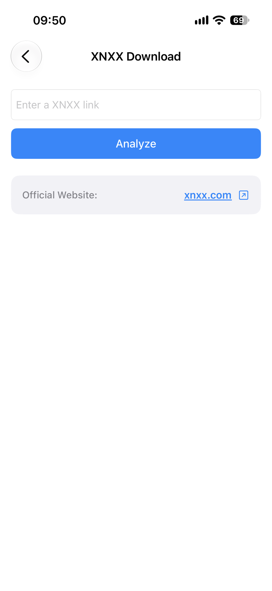

XNXX 동영상을 저장하는 방법
XNXX는 저장 버튼이 없는 웹 플레이어로 동영상을 재생합니다. 그래서 흔히 쓰는 방법이 팝업이 가득한 변환 사이트이거나, 플레이어 조작 버튼까지 함께 찍히는 화면 녹화입니다. ImageGet은 둘 다 거치지 않습니다. 동영상 링크를 붙여넣고 앱이 페이지를 분석하게 한 뒤 버전을 고르면 사진 앨범에 저장됩니다. 순서는 다음과 같습니다.
ImageGet을 무료로 다운로드하세요 — XNXX 동영상을 한 번의 탭으로 저장합니다.
ImageGet 다운로드1단계: ImageGet을 열고 Video Download 탭하기
ImageGet을 엽니다. 메인 화면에서 Video Download를 탭하세요. 동영상 도구가 모여 있는 섹션입니다.

2단계: 18+를 열고 XNXX Download 선택하기
동영상 도구는 카테고리별로 묶여 있습니다. 먼저 18+를 열고 XNXX Download를 탭합니다. ImageGet이 XNXX 모드로 바뀌고 동영상 링크를 기다립니다.

3단계: 동영상 링크 복사하기
브라우저에서 XNXX를 열고 저장할 동영상을 찾습니다. 주소창에서 URL을 복사하세요. 동영상 한 편의 페이지여야 하고, 홈이나 검색 결과 페이지는 안 됩니다. 그 동영상이 열리는 짧은 공유 링크도 괜찮습니다.
4단계: ImageGet에 붙여넣고 Analyze 탭하기
링크를 입력창에 붙여넣고 Analyze를 탭합니다. ImageGet이 페이지를 읽고 썸네일이 아니라 동영상 파일 자체를 추출합니다. XNXX 화면 아래에는 xnxx.com 바로가기도 있어서, ImageGet 브라우저로 사이트를 열고 거기서 링크를 복사할 수 있습니다.

5단계: 버전을 고르고 다운로드하기
ImageGet은 페이지가 실제로 제공하는 버전—대개 여러 해상도—을 나열합니다. 원하는 것을 탭한 뒤 Download를 탭하세요. 동영상은 사진 앨범에 저장되고, 플레이어 조작 버튼도 XNXX를 다시 열 필요도 없이 오프라인으로 재생됩니다.
XNXX 동영상 다운로드 팁
- 무료 다운로드 — 무료 플랜에서는 동영상 다운로드가 3회 제공됩니다. Premium으로 업그레이드하면 횟수 제한 없이, 광고 없이 저장할 수 있습니다.
- 낮은 화질은 용량이 적습니다 — 저장 공간이 부족하다면 해상도를 낮추세요. 휴대폰 화면에서는 차이가 크지 않습니다.
- 긴 동영상은 안정적인 연결이 필요합니다 — 분석은 서버에서 이루어지므로, 다른 앱으로 전환하거나 화면을 잠그기 전에 끝날 때까지 기다리세요.
- 보관할 권리가 있는 것만 저장하세요 — 다운로드 전에 XNXX 약관을 확인하고, 저장한 것은 비공개로 두세요.
FAQ
XNXX 동영상을 무료로 다운로드할 수 있나요?
네. 무료 플랜에 동영상 다운로드 3회가 포함됩니다. Premium으로 업그레이드하면 횟수 제한 없이 다운로드할 수 있습니다.
XNXX 동영상을 저장하려면 화면을 녹화해야 하나요?
아니요. ImageGet이 동영상 파일을 직접 다운로드하므로 화면 녹화가 필요 없습니다.
동영상 화질을 고를 수 있나요?
동영상이 여러 화질로 제공되면 ImageGet이 모든 버전을 보여 주므로 저장하기 전에 고를 수 있습니다.